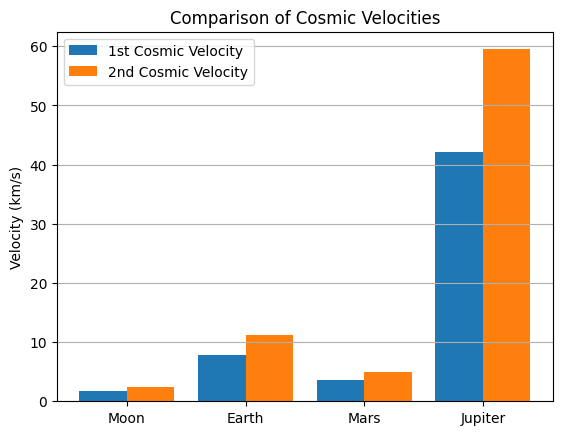

Problem 2
ℹ️ Why the "Motivation" and "Why Cosmic Velocities Matter" Sections are Important
📘 Motivation
🔹 What is it?
This section explains why the topic is important, why it matters, and where it is applied.
🔹 Why is it needed?
- Helps the reader get into the topic.
- Explains why cosmic velocities are important to study.
- Makes the project more meaningful and complete.
- Answers the question:
"Why should I care about this?"
🔹 Alternative
If you want, you can replace it with a short introduction like:
This work discusses the speeds needed to reach orbit, escape a planet's gravity, and leave the solar system.
❓ Why Cosmic Velocities Matter
🔹 What is it?
This concluding section shows the practical value of the entire work.
🔹 Why is it needed?
- Connects formulas and calculations with real-life applications.
- Shows where they are used:
- First cosmic velocity — for satellites and orbits.
- Second cosmic velocity — for missions to the Moon and Mars.
- Third cosmic velocity — for missions beyond the solar system (e.g., Voyager).
🔹 Benefits for the project
- Helps understand the meaning behind the calculations.
- Makes the report complete and logical.
- Creates a better impression during the defense.
🔹 How to simplify it
These velocities are important for space exploration because they help us understand the speeds required to launch satellites, send rockets to other planets, or even beyond the solar system.
✅ These sections make your work not just "formula-based" but meaningful and engaging.
🚀 Cosmic Velocities and Escape Velocities
📘 What Are Cosmic Velocities?
Cosmic velocities are speeds needed to move around or escape a celestial body:
- First Cosmic Velocity (v₁): To orbit the body in a circle (like satellites).
- Second Cosmic Velocity (v₂): To escape its gravity (like flying to space).
- Third Cosmic Velocity (v₃): To leave the Solar System.
🧠 Derivations
1️⃣ First Cosmic Velocity \( v_1 \)
Meaning: Minimum speed to orbit just above the surface.
Derivation:
- Centripetal force:
$$ F = \frac{m \cdot v^2}{r} $$
- Gravitational force:
$$ F = \frac{G \cdot M \cdot m}{r^2} $$
Equating:
Cancelling \( m \) and solving:
2️⃣ Second Cosmic Velocity \( v_2 \)
Meaning: Minimum speed to escape a planet's gravity.
Derivation:
From energy conservation:
Solving:
3️⃣ Third Cosmic Velocity \( v_3 \)
Meaning: Speed to escape the Sun starting from Earth’s orbit.
Formula:
🌍 Earth: Example Values
- \($ G = 6.674 \cdot 10^{-11} \, \text{m}^3/\text{kg s}^2 $\)
- \($ M = 5.972 \cdot 10^{24} \, \text{kg} $\)
- \($ r = 6.371 \cdot 10^6 \, \text{m} $\)
- \($ M_{sun} = 1.989 \cdot 10^{30} \, \text{kg}$ \)
- \($ r_{earth\ orbit} = 1.496 \cdot 10^{11} \, \text{m} $\)
Calculated:
- \($ v_1 \approx 7.9 \, \text{km/s} $\)
- \($ v_2 \approx 11.2 \, \text{km/s} $\)
- \($ v_3 \approx 42.1 \, \text{km/s} $\)
🌌 Comparison Table
| Celestial Body | Mass (kg) | Radius (m) | \( v_1 \) (km/s) | \( v_2 \) (km/s) |
|---|---|---|---|---|
| Moon | \($7.35 \cdot 10^{22}$\) | \($1.74 \cdot 10^6$\) | 1.68 | 2.38 |
| Earth | \($5.97 \cdot 10^{24}$\) | \($6.37 \cdot 10^6$\) | 7.9 | 11.2 |
| Mars | \($6.42 \cdot 10^{23}$\) | \($3.39 \cdot 10^6$\) | 3.6 | 5.0 |
| Jupiter | \($1.90 \cdot 10^{27}$\) | \($6.99 \cdot 10^7$\) | 42.1 | 59.5 |
📊 Visualization (Python)

import matplotlib.pyplot as plt
bodies = ["Moon", "Earth", "Mars", "Jupiter"]
v1 = [1.68, 7.9, 3.6, 42.1]
v2 = [2.38, 11.2, 5.0, 59.5]
x = range(len(bodies))
plt.bar(x, v1, width=0.4, label="1st Cosmic Velocity", align='center')
plt.bar([i + 0.4 for i in x], v2, width=0.4, label="2nd Cosmic Velocity", align='center')
plt.xticks([i + 0.2 for i in x], bodies)
plt.ylabel("Velocity (km/s)")
plt.title("Comparison of Cosmic Velocities")
plt.legend()
plt.grid(axis='y')
plt.show()